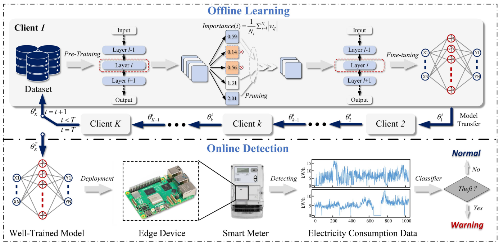

01
Learning-based Distributed Optimization
面向高比例新能源的强不确定性和大规模节点，研究学习优化、分布式经济调度与实时能量管理。
面向高比例新能源与智能电网场景，开展微电网分布式优化与控制、学习优化、 韧性安全控制，以及电力数据智能分析相关研究。
Guo Research Group, Zhejiang University of Technology

Team members of Guo Research Group.

副教授（校聘教授） · 博士生导师
浙江工业大学 信息工程学院
郭方洪博士现任浙江工业大学信息工程学院副教授（校聘教授）、博士生导师。 主要研究方向包括微电网分布式控制与优化、智能电网、工业互联网与大数据分析。 曾在南洋理工大学劳斯莱斯联合实验室和新加坡科技研究局智能电网实验中心开展研究工作。
Zhejiang University of Technology
Professor-equivalent Associate Professor, College of Information Engineering
A*STAR, Singapore
Scientist, Experimental Power Grid Centre
Rolls-Royce @ NTU Corporate Lab
Research Fellow
Nanyang Technological University
Ph.D.
围绕新能源微电网“实时调度—稳定控制—安全防御”主线，形成纵向分层、横向分布的研究体系。
面向高比例新能源的强不确定性和大规模节点，研究学习优化、分布式经济调度与实时能量管理。
面向微电网电压恢复、频率调节与功率分配，研究有限时间控制、组合误差反馈和事件触发通信。
面向DoS、FDI与传感器攻击等威胁，研究攻击检测、弹性控制、时变采样与安全通信机制。
面向跨主体电力数据和边缘设备，探索隐私保护联邦学习、故障诊断、运维智能与工业大数据分析。
F. Guo, B. Xu, L. Xing, W.-A. Zhang, C. Wen, L. Yu · IEEE Internet of Things Journal
F. Guo, Q. Xu, C. Wen, L. Wang, P. Wang · IEEE Transactions on Sustainable Energy
F. Guo, C. Wen, J. Mao, G. Li, Y.-D. Song · Automatica
F. Guo, C. Wen, J. Mao, Y.-D. Song · IEEE Transactions on Industrial Electronics
CRC Press, 2017
化学工业出版社, 2024
国家自然科学基金面上项目 · 主持
浙江省杰出青年基金项目 · 主持
浙江省“尖兵”“领雁”研发攻关计划项目 · 主持
国网杭州市供电公司 · 企业横向 · 主持
当前版本仅放入已公开、可核实的PI信息。学生成员可在 assets/main.js 中直接补充。
欢迎对分布式优化与控制、微电网、联邦学习、电力人工智能与嵌入式系统感兴趣的同学交流。
College of Information Engineering
Zhejiang University of Technology